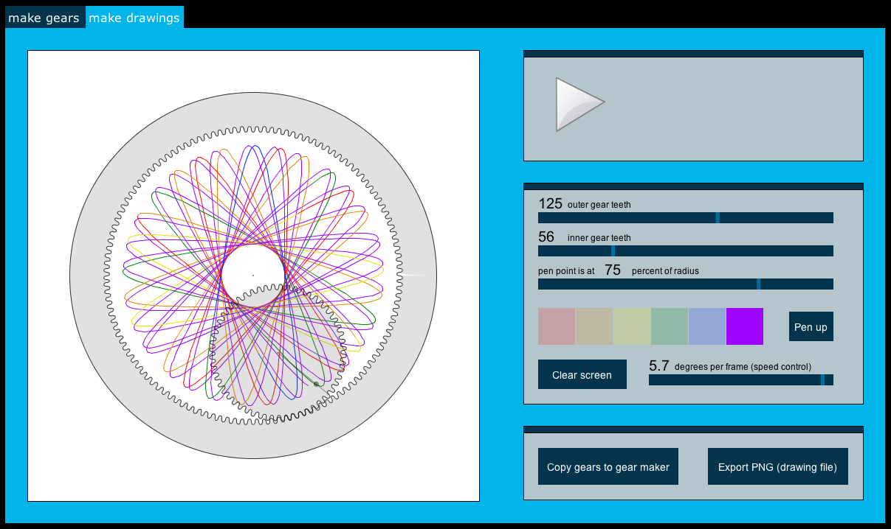

Spirogator
A software tool to simulate and export beautiful hypotrochoid patterns
- Mac OS X
- Windows
- Linux
- View On GitHub
This project is by Natalie Freed and Paula Hooper, and was supported by the Exploratorium and the New Media Fellowship program. We are creating curriculum and tools for learning through digital design fabrication!
About
Spirogator is a program designed to let makers and learners investigate the properties of hypotrochoid drawing tools (similar to "spirographs") both digitally and physically.
In the "make drawings" view, you can edit parameters that control a moving gear while it draws a pattern.
You can export that pattern as a PNG to print it out or use it in a digital design. For example, the paper cutout below was made on a scrapbooking cutting plotter using an exported spiro-pattern.

In the "gear maker" view, you can create and edit gears in custom sizes and place pen holes wherever you like.

You can export your gears as a vector image in PDF format, then cut them out using a lasercutter. Here are some exported gears that were cut out of clear acrylic and used to make spiro-patterns on paper.